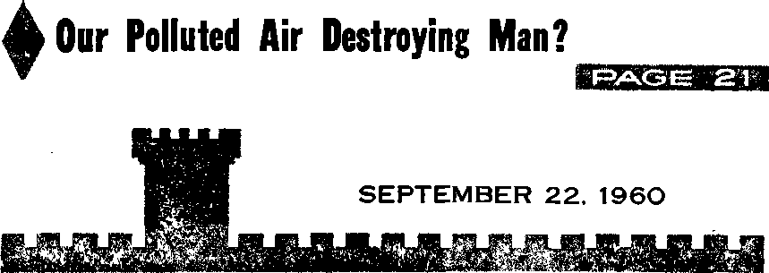
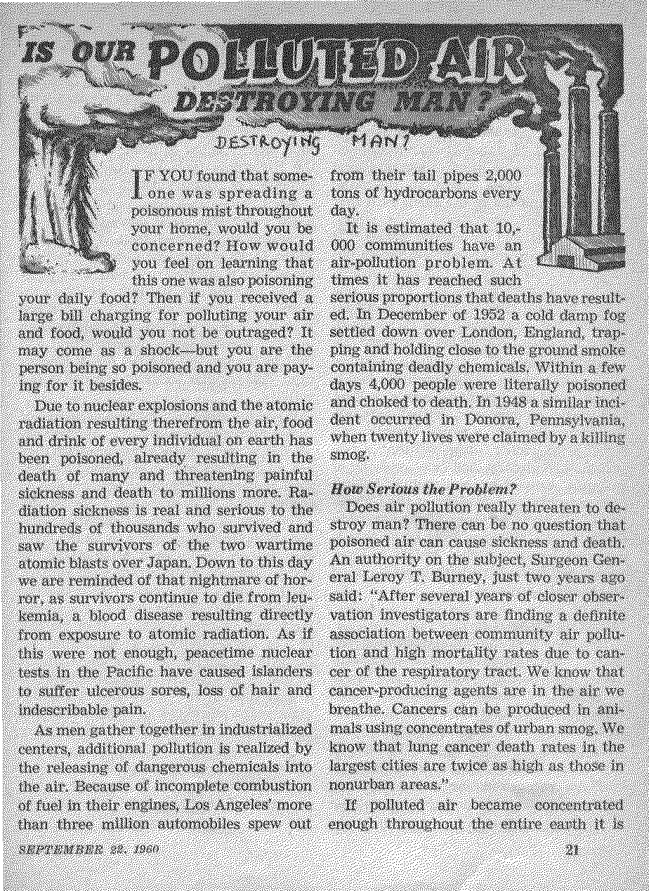
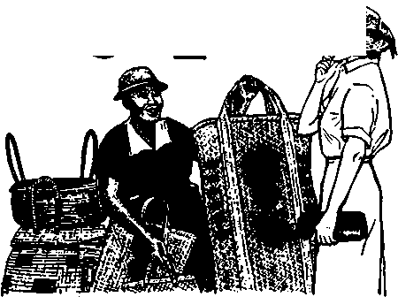

into an arid wilderness? Is it as strong as the faith of David, who fought
What Is Behind Those Headaches?
Ain You Gamble and Win?
THE MISSION OF THIS JOURNAL
News sources that are able to keep you awake to the vital issues of our times must be unfettered by censorship and selfish interests. "Awake!" hos no fetters. It recognizes facts, faces facts, is free to publish facts. It is not bound by political ambitions or obligations; it is unhampered by advertisers whose toes must nat be trodden on; it is unprejudiced by traditional creeds. This journal keeps itself free that it may speak freely to you. But it does not abuse its freedom. If maintains integrity to truth.
“Awakel" uses the regular news channels, but is not dependent on them. Its own correspondents are on all continents, in scores of notions. From the four corners of the earth their uncensored, on-the-scenes reports come to you through these columns. This journal's viewpoint is not narrow, but is international. It is read in many nations, in many languages, by persons of all ages. Through its pages many fields of knowledge pass in review—government, commerce, religion, history, geography, science, social conditions, natural wonders—why, its coverage is as brood as the earth and os high as the heavens.
"Awoke!” pledges itself to righteous principles, to exposing hidden foes and subtle dangers, to championing freedom for oil, to comforting mourners and strengthening those disheartened by the failures of a delinquent world, reflecting sure hope for the establishment of a righteous New World.
Get acquainted with "Awakel" Keep awake by reading "Awake!"
en ■ M'P II ■ IH
Published Simultaneously in the United States by the WATCHTOWER BIBLE AND TRACT SOCIETY OF NEW YORK, INC. 117 Adams Street Brooklyn 1, New York. U.S.A*
and in- England by WATCH TOWER BIBLE AND TRACT SOCIETY ■
Watch Tower House. The Ridgeway London N W. 7. England
N. H. Knorr, Preaideftt Grant Si? iter, Rccretary
Printing this issue: 3,075,000
4d a copy (Australia, 5d)
“Awake!” Is pnbHihed In the following 22 fiemlmnnthly—Afrikaans. Qloyanja, Danish, l>nldi, English. Finnish, French, German, iMi, ItuHim, .lupaneac, Norwegian, Puriugi.tf’Se. Spanish, Swedish, Tagalog, Zulu. Monthly— Indoiita^ti, Kuruati. Malayalam, Polish, UkrntR-lati.
Yearly subscrlptinn rates
(jfflctrj fur seniimonT.il|y editions
America, U.S., 117 Adams St, Brooklyn 1, N.Y. JI AisirjtUa, 11 Beresford Rd., Hirai Weld, N’.S-W 8/-Canada, 150 Brldfteland Ave., Toronto 19, Ont. fl England, Watch Tower nniwe.
The Ridgeway. London N.W. 7 7/-
New Zealand, 621 New North Bit, Auckland, S.W. I 7/-Soirth Africa, Private Bag, Elandsfcrfteln, Tvl 7/’ Monthly eiliticns eosL half £hc ahnvti rales.
Remittances for sLLtarriptJcnis in yuur cnunlry. Otherwise Urndon. Notice of expiration before subscription eiphTs.
Miwuld spjit the oIHit
-Henri yutir remittance to sent at Jeasl two issues
CHANGES OF ADDRESS should reach 0$ thirty iisys before yoir moving data. Give us your old and new Address (If Pfeslble, year old address label). Watch Tower, Watch To war House. The Ri dpi way. London N,W. 7, England.
Entered as second ’ class in after at. Brooklyn. N.Y. Printed In Ei inland
The Bible translation used In "Awab!” la the Nev World Translation of the Holy Serlptirw. When other translations are used the following symbols will appear behind the citations:
AS - American Standard Version AT~ An Amertcan Translation AV- Authorised Version (1611) Da — J. N. Darby's version
Dy — CKliuEic Douay version ED- The Emphatic Diaglott JP - Jewish Publication See. L-e - Isaac I^ewr'a version
itfO- Jhdim Moffatt’s version Eg — J. ]L Rotherham's vnrskui J?S - Revised Standard Vcritou Yf? — Robert Young'* vendon
CONTENTS
What Is Behind Those Headaches?
Freedom of Worship or the
Is Our Polluted Air Destroying Man ?
“Your Word Is Truth”
Priest According to the Manner of Melchlzedek
TODAY many feel that meekness is a sign of weakness; thus meekness is unpopular, because who wants to appear weak and unmanly? Strength is greatly admired; a strong person has power, he exercises influence and is not easily moved from his determined course. However, contrary to popular opinion, meekness is not necessarily a sign of weakness. History shows that some of the strongest men were specifically noted as the meekest; their strength was enhanced and beautifully balanced and tempered by the refreshing quality of meekness.
It is generally felt that strength is demonstrated by harshness, a quick temper and an unyielding, dictatorial manner. Few consider strong a person who is mild, sympathetic, forgiving and long-suffering. These qualities are usually interpreted as a sign of weakness. So to avoid appearing weak and to keep others from taking advantage, the general worldly attitude is to be tough and show others who is boss by “throwing your weight around.”
This appears to describe well many of today’s leaders. They wield much power, exercise great influence and are determined to reach their goals. Fear is the power by which they influence others and get their way. These persons are not genuinely loved, and usually their associates do not feel comfortable and at ease in their presence. How becoming would be the quality of meekness! How beautifully it would balance and temper their strong qualities’ How refreshing it would be! Meekness is the antithesis of haughtiness, arrogancy, vanity and impatience. A meek person is not easily provoked or irritated; he is mild-tempered, long-suffering, gentle, humble and patient under injuries.
But can persons exercise these qualities of meekness without being weak? Yes! Take the example of Moses, the leader of a nation of more than two million people. He was raised in the courts of the first world power, Egypt; in fact, he was part of the royal household and regarded as the son of Pharaoh's own daughter. He received the best of education and was a mighty man. “Consequently Moses was instructed in all the wisdom of the Egyptians. In fact, he was mighty in his words and deeds.” He exercised great influence over the lives of many people.—Acts 7:22.
What person can contend that Moses was weak? Certainly it was not a weak man who stood up before the raging world leader Pharaoh and gave God’s message to him, nor was it a weak, spineless character who led from Egypt the “stiff-necked” Israelites that once “talked of pelting [him] to death with stones.” Moses never backed down or catered to the wrong desires of the angry mob but stood up to them and told them of their transgressions. Yet note how the inspired Record describes him: "And the man Moses was by far the meekest of all the men who were upon the surface of the ground.” Who can say it is weak to be meek? Here we have the true record concerning one of earth's strongest, most fearless leaders, and yet it says that, of all the many millions of people on the face of the earth, Moses was by far the meekest. How refreshing and comfortable it must have been to be in the presence of that man! His power and strength were enhanced and beautified by meekness.—Ex. 32:9; Num. 14:10; 12:3.
Consider for a moment David, who in Bible writing often used the word “meek.” When just a youngster he defended his father’s sheep from a lion and a bear, killing them both in combat. On the battlefield he fearlessly faced a giant over nine feet tall, slaying him with a perfectly aimed stone. In theocratic wars he was mighty in battle. Of his military feats the women sang, “Saul has struck down his thousands, and David his tens of thousands.” As a military leader and ruler of a powerful nation David was a tower of strength—yet he was meek, mild-tempered, long-suffering and gentle.—1 Sam. 18:7.
David recommended and encouraged meekness by teaching that God “will cause the meek ones to walk in his judicial decision and he will teach the meek ones his way.” It was the same David who said that “the meek ones themselves will possess the earth and they will indeed find their exquisite delight in the abundance of peace.” Certainly David is an example proving that it is not weak to be meek!—Ps. 25:9; 37:11.
God foretold that ‘he would raise up for his people one like Moses’ and that he would be a mighty ruler greater than David. Jesus Christ proved to be this one greater than both Moses and David. He was the most powerful man that ever walked this earth, exercising tremendous influence; and nothing in the world could move him from his determined course. He was not a weak, spineless person that went around breathing mild benedictions. But neither was he haughty or arrogant, showing off his superior qualities and impatient with the faults and shortcomings of others. On the contrary, both in spirit and in action he was very close to his followers, kind, friendly and approachable, having a lowly disposition. Jesus was meeker than even Moses, making him the most refreshing, lovable companion. Note his gracious invitation to become one of his followers: “Come to me, all you who are toiling and loaded down, and I will refresh you. Take my yoke upon you and become my disciples, for I am-mild-tempered and lowly in heart.”—Deut. 18:18; Matt. 11:28, 29.
Never let worldly opinion influence you into thinking that it is weak to be meek. Let worldlings go on in their harsh, quicktempered, dictatorial way. But you be like Jesus, the strongest man that ever walked the earth. Be meek, teachable, loving and considerate, and even though the wicked may sometimes take advantage, remember: “Jehovah is relieving the meek ones; he is abasing the wicked ones to the earth.” “He beautifies the meek ones with salvation.” —Ps. 147:6; 149:4.
Meekness is a perfect garment for Christians. Wear it. “Clothe yourselves with the tender affections of compassion, kindness, lowliness of mind, mildness, and longsuffer-ing. Continue putting up with one another and forgiving one another freely . . . clothe yourselves with love, for it is a perfect bond of union.”—Col. 3:12-14.
into an arid wilderness? Is it as strong as the faith of David, who fought
HOW strong is your faith in
God? Is it as strong as the faith of Moses, who led about two million people out of Egypt a giant warrior with no other weapon than a few stones and a sling? Is it as strong as the faith of Gideon, who, with only three hundred men, went forth to fight an army of 135,000 well-trained warriors? These men had explicit faith in the Supreme Sovereign, Jehovah God. They firmly believed that “he is and that he becomes the rewarder of those earnestly seeking him.” Do you?—Heb. 11:6.
Although there has been an upsurge in church membership, the majority of professing Christians are assailed with doubts about the things in God’s Word. They have little to no faith in what is written there. Their tendency is to place greater trust in science than in God, in human theories than in his Word. Observing this, a nuclear scientist who is also a clergyman stated: “When I give a popular lecture as a physicist I can count on having an audience which is spontaneously and even subconsciously convinced in advance of the validity, importance and undeniable truth of the enterprise of physics as a whole. It is equally true, that whenever I give a popular lecture on a theological topic, I can count on having an audience equally convinced in advance that religion, although
Is your faith strong or are you filled with doubts? How can faith be . strengthened?
possibly proper, respectable and even admirable, is nevertheless a private peculiarity of individual people
and therefore essentially unreal and invalid.” What a book on science
says, the modern generation will accept as true without question, despite the fact that such books are made obsolete every few years, but what the Bible says is classed, more often than not, as mythical and unreliable. It matters not to these modem minds that the Bible has stood unchanged for thousands of years and is in complete harmony with proved science. It seems that this generation places greater stock in what a white-robed scientist says than in what God, the Creator, says. Because of the spirit of atheism that permeates modern thinking, faith in God and his Word is not the possession of all or even a majority of the people.—2 Thess. 3:2.
There are many religious people in
Christendom that profess to have faith, but when they are confronted with a decision between accepting what God says in his Word and what some professional man says, they will, more often than not, choose the latter. They thus show that their faith is really in men, not in God. They marvel more at the wisdom of the men who study the material universe and its laws than they do at the wisdom of the One who made the things these men study.
Western nations that profess to be Christian are afflicted with the same atheistic and materialistic sickness that grips the Communist nations, despite increased interest in religion. Commenting on the fact that their faith has succumbed to materialism, G. E. Mortimore stated in the Daily News of Prince Rupert, British Columbia: “The West is inhabited by lost people. They have full stomachs and empty hearts. Many of them have fallen away from religious faith and found nothing to replace it, but the pursuit of money, sex and power.”
In view of the materialistic thinking of this modern generation, it is not surprising that religious doubt is spreading through it like a contagion. According to the magazine Cosmopolitan, a survey showed that “one out of every four college graduates does not believe the Bible is the revealed word of God.” While the magazine did not say how many other students are troubled with doubts about God’s Word, it did point out this: “Religious doubt is growing among seminarians, and is infinitely more widespread than it was before World War IL”
Clergymen who are higher critics of the Bible and who discredit portions of it do not build up the sagging faith of students or adults but help to tear it down. In a poll taken of Methodist clergymen it was found that 28 percent of them could not completely accept the belief that Jesus’ resurrection is an assurance of eternal life. This was reported by Cosmopolitan of December, 1959. Such men are like broken cisterns that can ■ hold no water. People come to them for waters of truth, but go away thirsty.—Jer. 2:13.
Regarding religious doubt the same magazine observed: “We are living in what one writer has called a ‘post-Christian world.’ Religion is under attack by aggressive Communism and by those who would make a religion of science. ... For too many people today, doubt means the end of religious life.”
Doubt is like a seed that can grow into a noisome weed that spreads and transforms a beautiful garden into an ugly, disorderly weed patch. The time to pluck it out is before it begins to germinate. Doubt that leads to loss of faith grows when a person begins to distrust God. To have faith in him is to trust him, knowing that he would not lie to you by making promises in his Word that he will not keep. Because some religious organizations have misled people with traditions, philosophies and doctrines that are not supported by the Bible, that does not make God a liar.
All that Jehovah has promised in his written Word he will certainly do in due time, “So my word that goes forth from my mouth will prove to be. It will not return to me without results, but it will certainly do that in which I have delighted, and it will have certain success in that for which I have sent it.” (Isa. 55:11) “Look! I am laying in Zion a stone of stumbling and a rock-mass of offense, but he that rests his faith on it will not come to disappointment.” Jesus Christ, the One through whom God will fulfill his promises to man, Is "that stone.—5tom.
How can a person expect to have faith and to combat doubts if he makes no effort to gain an accurate knowledge of God’s Word? It is essential to take in continually the many truths of the Holy Bible, that your faith may be built up and strengthened.
Persons who are Scripturally ignorant are usually the ones who think God is obligated to do things for them. Commenting on this, frame of mind, clergyman Arthur Tingue said: "They want to make bargains with God. They want ten easy steps to lead them out of their problems. T’U go to church every Sunday if you promise to help me.’ These are the people who have the most trouble with doubt. They make a bargain with God, and when he doesn’t come through, they stop believing.’* Because of their ignorance of God’s written Word, such persons do not have a genuine faith. They mistakenly think that God exists to serve man, when it is the other way around.
You can strengthen your faith by going to the Scriptures, not with the cynical mental attitude of this atheistic world, but with the sincere desire to learn what they have to say. It is necessary to keep in mind that, while you cannot trust or depend upon what men say, you can trust God. Do not permit critics of his Word to disturb you, for they have been unsuccessfully trying to discredit it for many decades. Archaeological findings have proved them wrong time and time again. They are anxious to destroy your faith but can offer nothing wholesome to take its place. The position to take is the one held to by the apostle Peter, who said to Christ: "Master, Whom shall we go away to? You have sayings of everlasting life.”—John 6:68.
When a person is far removed in time from past events, he tends to look at them as more story than fact. Because he personally did not experience them, he has a certain detached feeling about them. They appear remote and unreal. The nation of Israel, for whom God performed some breath-taking miracles, developed this attitude toward what he did for them. For example, some of the generations that came lo'ng after the waters of the Red Sea were miraculously divided were not greatly impressed by the historical record of it. They experienced lack of faith and turned away from Jehovah God.
The passing of time seems to dull human memory to the crisp impression made by the things God did. It is only by reading and rereading the written record of them that you can keep them fresh, vivid and meaningful in your mind. Do not permit them to fade into the misty region of stories, but keep them in the clear realm of fact.
The Biblical record contains the testimonies of a cloud of witnesses, assuring future generations of its truthfulness. Regarding this the apostle Paul said: "So, then, because we have so great a cloud of witnesses surrounding us, let us also put off every weight and the sin that easily entangles us.” (Heb. 12:1) That easily entangling sin is lack of faith. It gets its foothold when you begin entertaining doubts about the Creator and his written Word.
Because the world is ruled by wicked invisible forces that exercise a powerful influence upon human thinking, it is difficult to maintain faith without continual effort to strengthen it.,Those forces use every imaginable means to destroy faith in God and his Word. "The inspired utterance says definitely that in later periods of time some will fall away from the faith, paying attention to misleading inspired utterances and teachings of demons.”—1 Tim. 4:1.
No one should imagine for a moment that he is immune to the doubts and disbelief that grip the materialistic, scienceworshiping people of this twentieth century. He must fortify his faith continually, remembering that the contradictions of worldly-wise men do not alter the truthful record of God’s Word nor do they make him a liar. "So let us not give up in doing what is right, for in due season we shall reap by not giving out.”—Gal. 6:9.
If
ill® g|| '&SS
...JY HEAD feels like ifs going to , M SIat It «« have b«„
■■ “« mat pain again. I guess I ««l T1“?^ «ZS£"XSS । new glasses. But then again, it might be Thty pxls,t 8S aa out^andmg symptom m
“It feels like someone is hitting me over . the head with a hammer, t get them so • often I just know there’?; something terribly wrong. Do you think it could be a
Do these complaints, or similar ones, f sound familiar to you? No doubt they do,! ■ for they are provoked by one of the most ; . common ailments known to the human race, the headache. Xn the United States alone statistics show that at any given time: ..........fmni ten te fifteen million oermte nndereo such a great variety of diseased states that i it might be said that almost any condition that upsets the equilibrium of the nervous system is capable of causing a headache. ■ While it is true that many people blame ; fJieir headaches on glasses, sinus, constipa- '■ tian, food, or the possibility of serious illness, it is not true that these are generally the cause, Ninety percent of all headaches do not originate with such factors; only about 10 percent do.
Many worry unnecessarily that a brain tumor is responsible for the pain. Fortu-not feel pain. This does not mean that brain tumors will not stimulate headaches. A large percentage of those with brain tumors eventually complain of headaches; but of the millions of headaches experienced daily, this cause constitutes only a very small portion.
the Ostm, of headaeh^. More than Mf *:
. the people who see a doctor have head- volved, but about 95 percent of headaches ■ aches as one of them complaints. do nof oriRln3te the hcad at a]]- TOey ;
Almost everyone has had a headache at seem t0 due to jWin> because '
; some time or other. It is rare to find some- painftt] stimulation applied at any point ■' one who has not. For approximately four- .^g nerve fibers can be projected or re* , teen m W ton, or eight^percent of the popii- ferred back to the head, where the brain : latlou in the United States, it is a chromo acls as a receivmg center for all nerve ■ ................MaAwthns . teei .......a,........-u......... »»___________________________________», ..................... , ■
along nerve film can be or re-
stimulation. However, the entire process is : far from clearly understood.
Of the 5 percent that originate in the '
1 from one, to sis haur& and the average per-
son has from one to twenty-four each year. Wi M luu, ut
The frequency of this discomfort is eon- head, only a fraction can be traced to se-firmed by the fact that almost fifty million rious head ailments such as brain tumors.
■' ■ headache tablets are sold every day in the Strange as it may seem, the brain itself is ' United Slates. This is more than seventeen insensible to pain. It can be operated on, ■ billion a year! the ceils damaged or crushed, yet it will
if fggf
Sinus trouble is frequently blamed for headaches, but here again, while congestion in the facial sinuses can result in pain, it accounts for only a very small percentage of all headaches. The congestion of sinuses causes pressure against nerves and may be felt along the borders of the sinus itself or in other parts of the head and neck. This congestion can result from infection, allergic irritation, blocked drainage, or combinations of all these factors. An acute infection is liable to follow a severe cold, influenza or other infectious illness. Accompanying this infection is the discharge that collects in the sinus cavities.
Other minor causes for headaches include disturbances of the eyes and ears, blows and accidents, allergies, poor ventilation, improper eating and drinking habits, and those associated with general diseases such as fever and high blood pressure. Patients with the latter, high blood pressure or hypertension, often complain of headaches. However, their frequency is not always related to the level of the blood pressure. People with low blood pressure can have headaches; those with high blood pressure can be without them, though many doctors do note the frequent coincidence of headaches with hypertension. The pain may be produced by a thickening and swelling of the blood vessels in the head, which irritates the delicate nerves near these vessels. A similar reaction may occur prior to the menstrual period in women.
Migraine headaches account for another minor 'part of all headaches. They may be minor as to percentage of occurrence compared to the total, but they are by no means minor in intensity. Migraines can begin in childhood, but more often affect the age group between 20 and 35, often terminating in the victim’s fifties. They tippear 'to be more frequent in women.
Some sufferers can tell when a migraine is approaching. They become anxious, tense, cranky, with occasional swelling of the extremities. Just before the pain begins, there may be a pounding sensation behind one eye and vision becomes obscured. The victim may see spots or light flashes and become dizzy. These symptoms are probably produced by a contraction of blood vessels in the head. Then the migraine’s pain strikes. The arteries may begin to expand, usually in the temple or forehead, accompanied by a throbbing pain, Which later turns into a steady ache. The pain seems to be induced by the irritation of tiny nerves surrounding these dilating blood vessels. Usually beginning on one side, it may spread and affect the entire head and neck. It may last only a few minutes, an entire day, or sometimes even several days. Eventually, the blood vessels return to normal and the pain ceases. It is a generally miserable experience, though it may leave one with a feeling of wellbeing.
The various types of headaches described still constitute only about 10 percent of the total. What of the other 90 percent? What kind of headaches are these that make up the overwhelming majority?
What is the most common type of headache? Doctors are in general agreement that “tension” headaches, stimulated by emotional stress, are by far the number one culprit. A tension headache is typically a sustained pain in any part of the head, and can be felt in the neck and shoulders as well.
This common variety that takes such a great toll in pain and discomfort comes from a source you might not suspect, the muscles of the neck and the scalp. As a result of fatigue and tension the brain loses partial control over these muscles, and they begin to tighten. Any sustained contraction of these skeletal muscles puts pressure on nerves and tiny blood vessels in the head, leading to pain. This pain can spread all over the scalp and become so severe that the patient tightens up even more, causing a further pressure on nerves and blood vessels—a distressing, vicious circle. Doctors know that “tension headaches” are directly related to constant or periodic emotional conflicts, worry, anxiety, strain, prolonged physical exertion beyond the point of fatigue, concentration or preoccupation with something for too long a time.
These conclusions are similar to those resulting from a survey taken by Dr. Henry D. Ogden of the Louisiana State University School of Medicine as reported to an American Medical Association meeting. He found that 80 percent of students questioned complained of headaches, 77 percent of executives. Then in descending order came professional people, housewives, clerical workers, salesmen and manual laborers. Farmers and other agricultural workers were on the lower end of the scale, with only about half reporting headaches. It becomes apparent that those who are more sensitive and who are exposed to the anxieties and tensions of modern living are most likely to fall prey to headaches.
Single situations may trigger tension headaches. A child may have one on his first day of school, a man worrying about financial arrangements, a housewife on her washday or in preparing for guests, husbands and wives after arguments, and so forth.
Once headache pain has begun, what can be done about it? The answer depends on the type of headache. What may be effective for one may not bring relief for another.
For most headaches, especially those in the tension category, the aspirin, or aspirin in combination with other drugs, will do about as well as any other preparation in relieving pain. Oddly enough, medical men are not exactly sure how aspirin accomplishes relief. Some suspect that it is carried by the blood stream to the forepart of the brain, which controls the ability to feel pain.
Tranquilizers cannot relieve pain, but they do aid in relieving tension, which is responsible for muscle contraction leading to pain.
One point to be stressed is that, while medication such as aspirin is useful as a pain reliever, it does not supply relief from the cause of the headache. These drugs simply act on the symptoms, not the underlying cause. In recent years many doctors have questioned the advisability of prolonged use of drugs such as aspirin, claiming that overusage can be dangerous. One report mentioned in the New York Times of March 15, 1959, stated there was evidence “that aspirin probably causes minor gastro-intestinal bleeding in a high proportion of heavy users.” The mechanism that may cause this reaction is said to be the corrosive action of gastric contents combined with the presence of insoluble particles of aspirin. However, other researchers claim that these reports are exaggerated.
It is said that an ounce of prevention is worth a pound of cure. This is true of headaches. It would be much better to take measures to avoid their frequent occurrence than to suffer unnecessarily.
To take proper steps to curb headaches, one must realize that most have an emotional basis. Even the migraine is thought to be caused by emotional strain. Tension is brought about in a multitude of ways: when life’s problems become too great; harboring resentment, such as dislike for an employer; competing to “keep up with the Joneses”; trying to meet overcrowded schedules; lack of recreation; in general, the stepped-up or anxious mode of living so common to this age.
Moderation should be displayed in our living habits. Too much sustained effort without thought of the consequences will result in tension. Life is not a series of frenzied hundred-yard dashes. As an automobile gives the best mileage at moderate speeds; so the human organism used moderately will give a more satisfactory, long-range performance. Excessive demands over a long period of time on the mind and body can bring on an imbalance of the nervous system and result in headaches and other disorders.
Take time out to relax. This eases muscle contraction and releases pressures that build up to headaches. A warm bath may be helpful, as are exercise, wholesome entertainment, a change of scenery, reading, music, and so forth. Some find massage and manipulative treatments, especially of the neck region, to have varying degrees of success. Proper planning of one’s daily schedule can be helpful too. Do the important things. If every last detail cannot be attended to, do not worry about it. Perfectionism in everything can overtax the system; being too fussy, insisting that things be just exactly so, constantly driving oneself for fear of criticism may cause difficulties. Rest is vital. Nothing can substitute for a sufficient amount of it in avoiding tension.
THE CATHOLIC CHURCH IN THE 2CTH CENTURY
• The influence of the Roman Catholic Church Is felt in all parts of the world, by both Catholics and non-Catholics. Its activities are of concern to you.
• What is the attitude of the church toward the Bible? How do Catholic teachings compare with the Bible and with the beliefs of early church fathers? What part has the church had in the wars of this 20th century? What are the policies and the practices of the church on matters of freedom, public schools, communism and morals? You should know the facts. '
* Answers to these vital questions have been gathered for you from Catholic information sources and other recognized contemporary historical works.
Coming tn the next taue?
The occasional headache should not cause undue concern to anyone. In some ways it may be regarded as a blessing. It is nature’s way of letting us know that we should slow down, or it may be a warning of a disturbance somewhere in the body, environment or personality.
However, if medication does not bring relief and headaches persist, you should go to a reputable physician to check on the possibility of serious organic disease. If there is no serious illness, more than likely it can be attributed to tension.
How true the words of Jesus, found at Luke 21:34: “But pay attention to yourselves that your hearts never become weighed down with overeating and heavy drinking and anxieties of life [over livelihood] ”! He knew, too, that the only permanent cure for aches and pains would be the restored Paradise on earth under the kingdom of heaven. At that time, he revealed, “neither will... pain be any more.” What lasting relief that will bring mankind when even in a physical way “no resident will say: Tam sick’ ” I—Rev. 21:4; Isa. 33:24.
By "Awake!” correspondent in Costa Rica SEPTEMBER 15, 1821, is a memorable date in the history of Costa Rica. On that day it declared itself free from the yoke of Spain. Since then that day has
been celebrated as a day of freedom. Strange, then, that some Costa Ricans should be deprived of one of their most precious freedoms because of that celebration.
During the week of September 15, 1959, the schools of the city of Puerto Limon were observing civic ceremonies to commemorate liberation. In one school the president of each class went out to the schoolyard to salute the flag as representative of the rest of the class, and his classmates were to stand to show they were represented by him in the salute. As the bugle sounded for the salute, all the students stood in the different classrooms with the exception of thirteen children. Why had they not stood? Their parents had taught them from the Bible that the salute was an act of worship and that worship belongs to God. The children were not disrespectful in any way, they did not tell others that they should not salute; they merely sat silent while others participated in the ceremony. They were known as good, obedient students and were not troublemakers.
The following Monday these students were expelled from school because of not participating in the flag ceremony, and were charged with rebellion and insubordination.
TH £ OF THE STATE?
The parents of the children requested an audience with the teachers to explain why their children did not salute the flag, but this was refused. They then wrote a letter appealing to the minister of education, but got no answer. A representative of Jehovah’s witnesses called on the minister and explained the position of these Christian people, but the minister would give no relief, saying that it was the law to salute the flag and the law must be obeyed.
They then appealed to a local court to have the children reinstated, but there, too, they were refused. The appeal was taken to the Supreme Court of Costa Rica, showing why their children did not salute the flag, that it was not for lack of respect to the flag and what it stands for, but because of conscience trained in God’s Word. It was pointed out to the Court that the Constitution of Costa Rica guarantees freedom of worship and the right to be educated in the schools of the State. The Supreme Court said that it concurred with the lower court that there was no violation of freedom of worship. Yet Law Decree Number 768 speaks of the practice as religious, commanding education in ‘the worship of the National Symbols.’ The children were unable to take their final examinations and lost the school year.
At the start of the new school year most of these students returned to school. April 12,1960, the schools commemorated a historic battle with flag ceremonies. Again the children of Jehovah’s witnesses did not participate. They were called to the director’s office and threatened with expulsion if it happened again. Because of the death of a former president of the country, special flag exercises were held June 6, and again the children of Jehovah’s witnesses did not participate. They were sent home and their parents called in and, in spite of the Scriptural reasons given by the parents, the school authorities said they would expel the children if they did not salute the flag and sing the national anthem. However, the children were accepted back in school the next day, but told that the following week there would be flag exercises every day and if they did not participate they would be expelled.
In the meantime a new minister of education had taken office, so a representative of the Witnesses again sought relief for the children, but the new minister was adamant in his refusal to recognize the right of the children to abstain from the salute ceremony because of conscience. A petition was then submitted to the Superior Council of Education, and on July 5, 1960, this petition was denied.
At the time of the expulsion of the children in September, 1959, there was hardly any comment in the newspapers. But after the representative of the Witnesses had talked to the new minister of education, an article appeared in one of the larger newspapers with the minister’s report of the interview. The article stated that a “principal of Jehovah’s witnesses” had asked for exemption of the children from the flag salute because the Bible prohibited it. The minister of education replied that the only Bible that existed for him as a functionary was the Constitution and the law. The article also stated that the minister told the “guest” that if he did not find freedom in Costa Rica he should look for it somewhere else.
The following day, June 19, a sharply worded editorial appeared in the same paper condemning Jehovah’s witnesses. The writer said that it was “really inconceivable that anyone had the daring to plant such an absurd and reviling demand." He further stated that if Jehovah’s witnesses did not want to render honors to the National Symbols, then it was high time to get out of the country.
This set off a vitriolic attack on two radio stations, with daily programs, one by a priest, calling for the authorities to "stop” Jehovah’s witnesses.
The day following the editorial attack an answer was published, written by a representative of the Witnesses. It pointed out that Jehovah’s witnesses had shown nd lack of respect for the flag, that they respect the flag of every nation where they reside; that the Witnesses in Costa Rica, as in every other country, are law-abiding, tax-paying citizens; but that their conscience trained in God’s Word prohibits them from doing an act of worship to the flag, since worship belongs to God. Since the newspaper editorial had mentioned the position of the Witnesses in the United States and England, the writer brought out that in the midst of World War n the United States Supreme Court had ruled that the compulsory salute was unconstitutional and violated the Bill of Rights. The attention of the editor was called to the Universal Declaration of Human Rights, Articles 18 and 19, adopted December 10,1948, by the General Assembly of the United Nations, and which states: “Everyone has the right to freedom of thought, conscience and religion; this right includes freedom to change his religion or belief, and freedom, either alone or in community with others to manifest his religion or belief in teaching, practice and worship and observance. Everyone has the right to freedom of opinion and expression; this right includes freedom to hold opinions without interference and to seek, receive and impart information and ideas through any media and regardless of frontiers?’
The Witness then cited the words of the famous Puerto Rican educator, Jose Padin, as quoted in The Island Times, San Juan, Puerto Rico, December 18, 1959: “The recital of words to create reality is pure black magic. Good, loyal citizens are raised in a climate of freedom . . . The Loyalty Oath at the school level is neither good pedagogy nor good democracy. It is indispensable in a totalitarian regime. In a democracy it is a violation of the very essence of freedom. Little children swearing allegiance to the flag and the indivisible entity for which it stands must make the angels weep.” The writer concluded, saying that, while Jehovah’s witnesses did not participate in the ceremony of saluting the flag, neither did they show lack of respect.
A few days later an article by a member of the National Assembly appeared in another paper, stating: “The fundamental thing to determine is if the State is right in expelling a student from an official center of education because the student subordinates his civic precepts to his religious convictions, formalism to the spirit, the country to God. And if, as the crowning freedom, it deals with a child, an adolescent who has been taught to believe, who has been raised under the discipline of esteeming every command imparted by God to men, can the State compel that child, that adolescent to violate the sacred principles of his faith? Should it teach him to be a coward, a traitor to his own family, to his religion, to his most intimate convictions? Can the State compel a child that thinks and feels God in his heart to render honors to a flag when that child is convinced that, on doing it, he transgresses the divine laws under which he has been raised? Is patriotism superior to faith? Is the State superior to God? I repeat: There can be no law against the conscience"
Sunday, July 3, a letter was published from a well-known Costa Rican lawyer, Mario Alberto Jimenez. Accompanying the letter in the newspaper was a photograph of a pirate, gun-running ship flying the Costa Rican flag. A German adventurer had registered five ships under the Costa Rican flag and was acting as an arms smuggler. This lawyer contended that if the authorities were looking for a lack of respect for the flag, here was a real case. He also showed how many business firms had violated the law regarding the flag by using it as a decoration for their places of business, and that the Catholic church had violated the law by flying the pope’s flag at the same level or even higher than the Costa Rican flag. He stated that it was almost sure that if “Jesus should return he would be indifferent even to the flag of the Holy Father.”
In spite of the sound reasoning by these public figures, the Superior Council of Education ruled in its opinion of July that the children of Jehovah’s witnesses could be made to salute the flag or be expelled from school.
Both the former minister of education and the present one said they would never think of trying to force a child to worship before a religious image. Yet they saw no inconsistency in demanding that the child worship the image of the State. God’s Word at Exodus 20:3-5, and many other scriptures throughout the Bible, does not say that the worship of religious images is prohibited but that other images may be worshiped. The worship of all images, without exception, is prohibited. Daniel, chapter three, shows the course of three faithful servants of God. They refused to bow down to an image of the State even though it meant being sentenced to death. God showed his approval of their stand by delivering them from death. Jehovah’s witnesses today are in the same position. They have dedicated their lives to God and they must prove faithful to that dedication vow or suffer the penalty of death. (Rom. 1: 31, 32) The apostle Peter stated the principle that has always governed Christians when there is a conflict between God and the State: “We must obey God as ruler rather than men.”—Acts 5:29.
What will be the outcome? The more than two thousand Witnesses in Costa Rica and their children hope they will be able to continue worshiping Jehovah God in peace, with the school authorities recognizing their freedom. They do harm to no one and are never involved in plots against governments or in revolutions. No government has anything to fear from Jehovah’s witnesses. They unselfishly give of their time and energy to help others who wish to study God’s Word and learn of the wonderful promise of a free, peaceful world soon to be established by God’s power.
Costa Rica has enjoyed an enviable reputation as a freedom-loving country up to now, even though the Catholic religion is the state religion. If this present action against Jehovah’s witnesses continues, it can only be viewed as a step backward in the long, hard fight to maintain liberty, to protect the individual from the overriding power of the State. If the education authorities refuse to recognize the right of Jehovah’s witnesses to freedom of worship, it will mean that the children of these Christian families will have to go without an education or go to some nearby country that recognizes their right to worship God according to their conscience. Even now there are threats by some individuals of forcibly taking these children from their parents, as was done by the Nazi dictator Adolf Hitler, and as is being done now in some Communist lands.
Undoubtedly freedom-loving readers of this magazine will want to register their protest against this violation of freedom of worship as guaranteed by the Constitution of Costa Rica and by the Universal Declaration of Human Rights adopted by the United Nations, of which Costa Rica is a member. If so, they should write to His Excellency Mario Echandi Jimenez, President of Costa Rica, and the Superior Council of Education, San Jose, Costa Rica.
Jehovah's witnesses are on trial in Costa Rica, but they know they face a much higher tribunal than that of any man or nation, that of the Supreme Judges of the universe, Jehovah God and Christ Jesus. Those who oppose them also stand before that court. Jehovah’s witnesses await that decision with calmness and confidence. They joyfully look forward to the fulfillment of the inspired words of the psalmist (7:8): “Jehovah himself will pass sentence on the peoples. Judge me, O Jehovah, according to my righteousness and according to my integrity in me.”

STQNEY-FACED play- * t
ers, crowded around the
spinning roulette wheel, watched in silent fascination as the small ivory ball stopped its bouncing and began to roll from one brass-divided section to another. Finally it came to a stop in one of the numbered sections of the wheel. Quickly the table was cleared of chips, and just as quickly more were put out by the players for the next spin. This is a common sight in gambling casinos throughout the world. Players bet on the chance that the ivory ball will settle on the number they select. Some win; others lose.
Why is it that people are willing to risk their money, sometimes all they have, on that ivory ball? Is gambling a sure way of getting rich fast? Can a person, over a period of time, win at gambling? Is gambling harmless entertainment? What effect does it have upon society? These and many other questions face the person who takes a look at gambling and marvels at the fascination it holds for those who engage in it.
It has such great popularity that some governments not only make it legal but often sponsor it in the form of lotteries. Whether it is carried on in luxurious casinos, shoddy gambling parlors, grimy alleyways, smokey back rooms, giant race tracks or in churches, it is never short of players. Elven in places where it is illegal there are lots of players and secret places where they can gamble. It was estimated by Senator Kefauver’s Crime Investigating Committee that 20 billion dollars is involved annually in gambling operations in the United States. That would make a string of one-dollar bills that would stretch
from earth to moon eight times. It might also be compared with spending twenty dollars every minute from the time the apostle Paul wrote his letter to the Romans A.D. 56 down to 1958.
The odds in a gamble can vary greatly, especially when elements other than pure chance are involved, such as in races and athletic contests. But in games such as roulette and craps where chance alone is to be considered the odds are more constant. This term, which is common in gambling circles, may be a bit puzzling to nongamblers. It has to do with the probability that something will or will not happen. If, for example, one of a pair of dice were thrown, the chance in favor of the side with, say, four dots coming up is one in six because there are six sides to the dice. There are, therefore, six possible results in every throw, one of which could be the side with four dots. The odds against the four appearing on a throw can be said to be five to one.
In a long series of throws the probability is that the four dots will come up one in every six throws. The more throws that are made, the greater is that probability. If, in another instance, the fair betting odds were three to one against a certain event, this would mean that the event, in the long run, would take place once in every four trials.
When two individuals are gambling against each other and the odds are in favor of one, that would mean he is certain of winning in the long run. It does not mean he will not have losses, and it does not mean that the other person may not have a series of wins, but it means that after many trials he is certain to have the other person’s money. This would be gambling with unfair odds. Take, as an example, the soldier who bet onlookers at crap games that the shooter would not make his point when it was either a six or an eight. The odds were in his favor because in every throw of the dice there were five possible ways of making a six or an eight but six ways of making a seven. The odds were six to five against a six or an eight appearing on the dice and in favor of seven. Anyone betting against him would eventually be the loser. „
It is because the odds are arranged to favor gambling houses that you are certain to be the loser in the long run when you play against them. Professor Philip Fox pointed this out. “People who bet with bookies,” he said, “or in legal deadfalls such as race tracks, and casinos in Nevada, are chumps because they are ignorant of the insuperable odds against them. ... No one who bets regularly on horses or other sports with bookies, or bucks the house percentage in craps, roulette and slot machines, has the slightest chance of winning in the long run. The longer he plays, the more staggering are the odds against him.”
It makes no difference whether he plays a great number of games at one time or stretches them over many years. Each time he plays, the more certain it becomes that the gambling house will end up with his money. Usually winnings are promptly lost in continued playing. The games do not have to be crooked for this to happen, although they very often are. The houses can depend upon the odds that favor them.
If a house has sufficient capital to withstand unfavorable runs, it is assured of profits in the long run. A famous gambler of the nineteenth century said: “All any gambler wants is to have play for a long enough time and he’ll get all the money any player has.”
In craps the house has an edge in its favor of L41 percent when the shooter bets his own pass. With roulette, American gambling houses that operate honest wheels have an edge of 5.26 percent for even money bets on red-or-black and odd-or-even numbers. This is possible because American roulette wheels have two zero sections that represent outright losses to the players. European wheels, with only one zero, give the house an advantage of 1.35 percent on even chances and 2.7 percent on the numbers. .
Slot machines that have not been rigged are set to give the house an advantage of 25 percent. Twenty symbols on each of three dials mean that with every cycle there are 8,000 combinations possible. Out of those 8,000 possible combinations there are only three that produce the winning three bars that mean a jackpot. These are murderous odds against a player. Of course, machines may vary, but the odds against a jackpot are certain to be tremendous in every case.
Pools on football games that are operated by gambling syndicates are designed for suckers. The odds are so arranged that the syndicate is assured of an advantage that ranges from 53 to 92 percent.
Betting on horses is another sure way to lose your money. “It is impossible,” says Professor Fox, “to win on the horses over an extended period, because the state and the track skim so much off the betting pool. Nearly every player thinks a 17 percent take, which is common in most large states, is the only handicap he must overcome. That is true if he bets on only one race. When he and the entire crowd rebet winnings through the parimutuel machines, the take is closer to 60 percent for eight races.”
Many inveterate gamblers think they are certain of winning by using one of the many gambling systems that have been worked out. They can often be seen sitting by roulette wheels carefully noting winning numbers on a pad and then placing bets after making studious calculations. More often than not they leave the table with empty pockets. The only way a person can make money with a gambling system is by selling it to chumps.
In his book The Science of Chance, Horace Levinson states: “Systems can be divided into two classes: those that have some effect on the probability of gain or loss during short periods of play, and those that have no effect whatever. There are no systems that have any effect in the long run.” Professor Fox adds his voice to this view by saying: “I never have seen one that gave the player a remote chance to break even in an honest game, much less show a profit.”
The famous Martingale system is believed by some persons to be a sure way to win. By doubling losses it seems to insure the player a return. He places a bet of one dollar. If he loses, he doubles the next bet, and if that is lost too, he doubles again and so on until he wins. After each win he bets one dollar. The theory may appear sound, but it does not work out in practice.
The roulette wheel has no memory, and that means a player’s chance of winning does not increase after he has lost several times in succession. His chances of winning or losing are the same for each spin. This fact is too often overlooked. System gamblers mistakenly think there is such a thing
Ik
as maturity of chances. This is the big weakness in most gambling systems. By using the Martingale system of doubling losses a series of losses can force a player to drop out because he reaches the limit of his finances and is unable to make another bet.
When writer Clyde Davis demonstrated the Martingale system at a party, using play money, he had a run of nineteen consecutive losses, which amounted to $524,-288. Doubling this required him to put up $1,048,576 on the chance of winning one dollar. Obviously, that would be a ridiculous investment if a person had that much real money to bet.
Aside from the chance of a bad run the system player is confronted with a betting ceiling that is placed on games by the gambling houses. At Monte Carlo one of the maximum stakes is 12,000 francs, with a minimum of 10 francs. With the Martingale system the player would be limited here to doubling his initial bet nine times. If he had ten consecutive losses, he could not double his last bet to recover them.
Gambling can make an addict out of a person just as narcotics can. Once the gambling fever gets a grip, the victim finds it nearly impossible to quit. It can undermine his morals, causing him to put gambling ahead of everything else. Family, friends, self-respect and moral integrity take second place. It has caused persons with no previous criminal record to turn to thievery. Court records are filled with such cases. In his book Nature of Gambling, David Allen states: “It leads to massive embezzlement, cheating, killing, and disruption of many kinds.”
The money people use in gambling, whether in quest of amusement or in the mistaken notion of getting rich fast, usually goes into the pockets of the underworld.
AWAKE!
They are actually financing the criminal element that preys upon then) and that corrupts those who rule them. Regarding the billions of dollars American gambling pours into the ranks of the lawless, Reader's Digest said: “The gold pouring into the pockets of the underworld is doing more to increase our big-city gangs’ potential for evil—including the corruption of officials —than anything since Prohibition.” The magazine The Nation also made an observation on this: “Nowadays gambling is not only a major source of municipal corruption; it provides the organization which enables syndicates to operate even more lucrative rackets.”
Under no circumstances caii gambling be considered as on the same level as legitimate business. In its long, sordid history it invariably has been responsible, in one way or another, for corrupting and degrading human societies.
Note what Virgil Peterson of the Chicago Crime Commission stated about it: “Those engaged in the gambling business have, with very few exceptions, been identified with the criminal element. The ranks of gambling house proprietors have been largely filled with swindlers, confidence men, sharpers, notorious bandits of every description, and even a large number of bank robbers and murderers. The business of gambling has always been characterized by dishonesty. Gambling houses have flourished to the greatest extent in those localities in which the greatest amount of lawlessness and corruption has prevailed.
Commercialized prostitution in particular, aS well as Other forms of crime, has been prevalent contemporaneously with wide open gambling.”
You are certain to be the loser in the long run when you gamble. The odds are against you even in honest games, and few of them are honest, which is to be expected of anything in which the underworld has a hand. You are also the loser because, through gambling, you help to finance the criminal activities that deteriorate and corrupt the society in which you and your children live.
The insidious nature of gambling makes it morally dangerous to you and to the community. No matter how it may be analyzed, evidence in its favor is wholly lacking. It is parasitical, giving nothing but taking all.
How can any person who loves righteous principles look with favor upon gambling, much less participate in it? How can he give support to what is unrighteous and pernicious while professing to be a lover of justice, honesty and other right principles? It matters not whether a government has declared gambling legal or churches permit it, its evil effect remains the same. It is the fruit of a wicked world that has a bad influence upon all who come in contact with it. It creates a love for money, which “is a root of all sorts of Injurious things.” (1 Tim. 6:10) If you love what is righteous and upbuilding, you will not gamble.
Jlag Worship
<L According to the New York Times of November 21, 1958, Governor J. Lindsay Almond, Jr,, of Virginia stated: “I not only respect, I worship the flag of my country.” Compare this with what the leader of Christianity, Jesus Christ, said: “It is Jehovah your God you must worship, and it is to him alone you must render sacred service,” —Matt. 4:10.
• The water ouzel or dipper may be quite an j ordinary-looking bird, but how remarkable it \ is for its water exploits! Here is a bird that \ thinks nothing of cavorting in the icy spray / of a Rocky Mountain stream; it walks or \ swims underwater, dining on tasty aquatic in- \ sects. Atomic submarines that travel under / the North Pole have little on this feathered \ submariner, for it has been observed to force \ its way even under a sheet of ice. One of the j most Interesting descriptions of this water- \ loving bird was given by John Muir in The \ Mountains of California: /
• “The Ouzel seldom swims more than a few / yards on the surface, for, not being web- \ footed, he makes rather slow progress, but by \ means of his strong, crisp wings he swims, / or rather files, with celerity under the surface, \ often to considerable distances. But it is in \ withstanding the force of heavy rapids that / his strength of wing in this respect is most \ strikingly manifested. The following may be *. regarded as a fair illustration of his power / of sub-aquatic flight. One stormy morning in winter when the Merced River was blue and green with unmelted snow, I observed one of / my ouzels perched on a snag out in the midst \ of a swift-rushing rapid, singing cheerily, as \ if everything was just to his mind; and while / I stood on the bank admiring him, he suddenly \ plunged into the sludgy current, leaving his . song abruptly broken off. After feeding a min- / ute or two at the bottom, and when one would suppose that he must inevitably be swept far downstream, he emerged just where he went down, alighted on the same snag, showered the water-beads from his feathers, and continued his unfinished song, seemingly in tranquil ease as if it had suffered no interruption.
• "The Ouzel alone of all birds dares to enter a white torrent. And though strictly terrestrial in structure, no other Va se InsepaiaWy related to water, not even the duck, or the bold ocean albatross, or the stormy-petrel. For ducks go ashore as soon as they finish feeding in undisturbed places, and very often make long flights overland from lake to lake or field to field. The same is true of most other aquatic birds. But the Ouzel, bom on the brink of a stream, or on a snag or boulder in the midst of it, seldom leaves it for a single moment. For, notwithstanding he is often on the wing, he never flies overland, but whirs with rapid, quail-like beat above the stream, tracing all its windings. . . . The vertical curves and angles of the most precipitous torrents he traces with the same rigid fidelity, swooping down the inclines of cascades, dropping sheer over dizzy falls amid the spray, and ascending with the same fearlessness and ease, seldom seeking to lessen the steepness of the acclivity by beginning to ascend before reaching the base of the fall.”
A news item from London appeared in the New York Times of June 5, 1959; “The Lancet, a leading medical journal, is urging British physicians to fight for the abolition of boxing. ... This is the latest of a series of attacks on boxing on medical grounds in Britain. One of the most prominent critics has been Dr. Edith Summerskill, a Labor member of the House of Commons and a former Minister of National Insurance. ‘Sixty-four deaths, including twenty-two amateurs, in four years is a prohibitive price to pay for a sport which makes the brain and its exquisitely sensitive extensions such as the eye legitimate—in fact, main—targets,' the editorial asserted. 'If boxing causes fatal cerebral damage in a few contestants, the natural conclusion is that it causes material brain injury in many more.' . . . About eighteen months ago the subject was widely discussed in medical circles as the result of a report by Dr. MacDonald Critchley, a London neurologist, on brain injuries suffered by fighters. He said, that brainwave recordings of sixty-nine former boxers showed that most of them unquestionably had received such injuries?'
certainly conceivable that man’s existence could be imperiled. Until recently there was no chance of this happening, but with the development of H-bombs and their spread of radioactive poisons earth-wide man is forced to consider the possibility. In 1956 a report of the National Academy of Sciences and National Research Council spoke of “the possibility that increased and prolonged radiation might so raise the death rate and lower the birth rate that the population, considered as a whole, would decline and eventually perish.” It added: “We are at present extremely uncertain as to the level of this fatal threshold for a human population. This is one reason why we must be cautious about increasing the total amount of radiation to which the entire population is exposed.”
According to some authorities, pollution of the atmosphere by radioactivity is one of the greatest threats to man’s welfare and continued existence. Three years ago Dr. Linus Pauling, a noted chemist and Nobel prize winner, estimated that 10,000 persons had already died or were dying of leukemia caused by radioactive fallout. Last year in a speech given at the University of Michigan he spoke of the hazard in these terms: “For every big bomb that is exploded I estimate that 15,000 children are caused to be born with gross physical and mental defects.”
The danger of radiation poisoning has long been recognized but often underestimated. With Roentgen’s discovery of X rays in 1895 and the discovery by Marie and Pierre Curie a short time later of the radioactive element radium, mankind entered an era in which they would have to cope with this new hazard. Because of either not recognizing or underestimating the hazard, Marie Curie, her daughter, and many other early experimenters died as a result of overexposure to radiation. In 1939, with the splitting of the uranium atom, the nature and magnitude of the danger Was increased immeasurably, and in 1945 the potential of the hazard was realized with the exploding of the first atomic bomb. Since then over 200 such bombs, with a total energy equal to more than 8,000 of the Hiroshima type, have been exploded, spreading radioactive debris earth-wide.
What causes radiation, and how does it harm man? How is it spread earth-wide to poison the air and food of everyone? Pierre Curie in experimenting with radium found that it emitted rays that were painless to a person but that in a few days produced an open sore slow in healing. Since then it has been learned that radium is an unstable element slowly disintegrating, and that in the process it gives off dangerous rays. This peculiar behavior is called radioactivity.
When the atom was split a new source of radioactivity was realized. In a nuclear explosion, when uranium atoms are split, they are changed to atoms of other elements such as barium, cesium, strontium, and so forth. However, the change is to an unstable form of these other elements so that they begin to disintegrate and, in the process, give off deadly rays. Most of the unstable elements disintegrate very rapidly, so that thirty-two hours after a nuclear explosion, half of the radioactive power burns out. In a few weeks most of the rest of the radioactivity dies. Strontium 90, however, is one of the exceptions, and it continues to give off radioactive rays for a long time. It has a half-life of twentyeight years, meaning that it takes that long for half of its radioactivity to burn out.
Up until eighteen years ago there was no strontium 90, but now it is estimated over 200 pounds have been released into the atmosphere. Every person on earth has it in his bones, and the question arises, How much can one stand before irreparable damage is done?
When a big bomb is exploded, millions of tons of vaporized earth and rock are carried skyward in the intensely radioactive cloud. Dust particles from the cloud condense and fall back to the earth, spreading dangerous radioactivity wherever they fall. This is called local fallout even though it may cover thousands of square miles. It is especially dangerous because little of the radioactivity has had a chance to bum out.
Large amounts of the radioactive products of a nuclear explosion, however, are carried up over seven miles into the stratosphere, where prevailing winds whisk them around and around the globe. The latest studies indicate that in four to five years most of it falls back to the earth by attaching itself to rain or snow, almost none falling in regions of little rainfall. By this time most of the radioactivity has burned itself out, with the notable exception of strontium 90—notable because of its dangerous tendency to find its way into man’s food and from there to his bones.
Strontium 90 is chemically very similar to calcium, so where calcium goes strontium 90 follows. Plants that normally pick up calcium from the soil will pick up strontium 90. When people eat these plants or drink milk from cows who have eaten them they take in strontium 90. Like calcium, strontium 90 heads for the bone, where it lodges for a long time, emitting its destructive rays. Blood is manufactured in the marrow of our bones and radiation interferes with its proper production, bringing on leukemia and other diseases.
It was in 1954 that strontium 90 was first detected in the human body. Over the past few years a systematic study has been made of bone samples from all over the world of people who have just died. The results of the studies show that, strontium 90 can be found in all humans regardless of age or geographic location. Because their bones are growing, children average about four times as much as adults, but even then the amount varies greatly from person to person, with some individuals having seven times more than others.
Throughout the United States and Canada the U.S. Public Health Service has been making a month-by-month analysis of milk for strontium 90. These and other studies supply conclusive evidence that the amount has been increasing since 1954. As to the danger of strontium 90 in the body, Dr. M. Tsuzuki three years ago said: “I do not believe strontium 90 will be permanently harmful at its present level, but if experimental explosions continue at their present rate there will come a time when the human body will be seriously harmed. It will then be too late to do anything about it.”
Air pollution through radioactivity is a growing menace exacting a price not yet fully known. At the very best its cost would be measured only in dollars and cents, but already many have paid a much dearer price in suffering, pain and death. Perhaps the most insidious hazard of radiation is the genetic damage it causes, affecting succeeding generations. A recent report of the United Nations Science Committee estimated that throughout the world between 2,500 and 100,000 children may have already been born with major physical and mental defects because of mutations induced by radioactive fallout
The financial burden shouldered by the public for making nuclear weapons is so fabulous that the public never seems to hear the complete story. Giving an insight into what it amounts to, the London Daily Express of February 16, 1960, had an article captioned “Cost of the Finger on the Button.” In part it said: “The cost of keeping just one U.S. Atlas liquid-fuel missile ready for immediate firing is nearly £1,000,000 [$2.8 million] a year. America plans to have 13 squadrons by 1963, armed with 10 Atlases each, a total of 130 missiles. So the annual cost of just keeping them ready and fueled will be nearly £130 million [$364 million]. The high cost is due to the fact that the liquid fuel is highly perishable and must be used or changed frequently.” A New York Times headline of July 2, 1959, said, “Atom Plane Cost Put at 10 Billion."
Even at its best behavior, the harnessing of atomic power presents its problems. Interesting to note is the ever-increasing problem of disposing of the fast-accumulating radioactive wastes. It is the practice to dump low-level wastes into the oceans and rivers or bury them in the ground. However, there are over 65 million gallons of radioactive wastes too hot to dump anywhere and these are being stored in underground tanks at great expense. One hundred and forty-five tanks at Hanford, Washington, where most of it is stored, have a capacity of ninety million gallons and cost $37.5 million, which amounts to 41 cents a gallon for storage. It is said that these wastes will still be too hot to dump a thousand years from now, necessitating transferring them into new tanks every few decades as the old ones deteriorate.
Air pollution affects everyone in many different ways, and the annual cost is staggering. It soils our clothing, dirties our living quarters, corrodes our buildings, irritates the eyes and nose, causes damage to plants and animals, and does untold harm to our health. It has been estimated that air pollution costs the U.S. $4 billion annually, about $65 a year for every person in the country, and this amount of money does not include the difficult-to-estimate costs of damage to paint on buildings, damage to crops, and taxes for street cleaning and other debris handling.
Great strides have been made in many communities to remedy the air-pollution problem. Controls on industry, laws forbidding the burning of soft coal, and restrictions on rubbish burning are only a few of the measures that have greatly improved matters. Exhaust from automobiles has become the chief offender in many communities, especially Los Angeles, where the climate and the geography of the land hold the smog down over the city. But just this past spring California’s legislature passed a bill requiring antismog devices on the state’s 7,500,000 cars and trucks within three years after antismog attachments are perfected.
For the air-pollution problem to be resolved men must learn to be unselfish and have genuine love for their neighbors; then they will be quick to apply effective measures for controlling pollution, even though it may be an expense to themselves. Everyone today is having his air, food, and drink poisoned, and to a great extent selfish men seeking money and power are responsible. What a joy and happy assurance for God-fearing persons to hear the Creator’s promise that soon he will “bring to ruin those ruining the earth.” With only unselfish men who love their neighbors left on the earth, polluted air will never threaten to destroy man, but the air will always be fresh, clean and a delight to breathe. —Rev. 11:18.
THE place to buy a basket in Nassau, Bahamas, is in the straw market. But do not expect to find here things made from actual straw. It would be most surprising if you could. The material generally used in these products is the leaves of palms.
As you walk through the market you will see
BAsKtfT? H
By “Awokd" ttrrnipondent in th* Bahama)
the gathering and plaiting is done for the many products you see in the straw market. The homes on this island are often thatched with palm fronds and swept out with brooms made of palm leaves bound to a stick. See how the people are busily plaiting and weaving strips of palm leaves for mats and baskets.
When these peo
an amazing assortment of plaited and woven products, including baskets of many sizes and shapes. Notice the one being held up by that brown-skinned woman. It is large enough to hold a man. Possibly it is larger than you want. If so, this smaller one over here that is decorated with a shell pattern may strike your fancy, or perhaps this other basket with a pattern of raffia. From the large assortment that the straw market offers, I am sure you will find what you want.
Perhaps you would be interested in a straw hat, also made from palm leaves. How about a yard-wide hat like the one that tourist is wearing, or one that is smaller with a trimming of gaily-colored sea shells? Over here is an interesting picture hat made from lacelike sisal, a fiber taken from the agave plant. Would you like to take a gift home for your young daughter or for some other little girl? If so, the straw market has dolls made of palm leaves.
I think you would be interested in going out to one of the islands where much of ple go out early in the morning to gather palm leaves, they say that they are going out topping. They take along a large basket for carrying the palm tops they gather, a straw hat for protection from the sun, a machete for cutting the tops, and on their feet are sandals made with several layers of plaited palm.
A group of women and girls will hike along a winding trail through the bush, over rough coral and limestone until they come to where the silver-top palm grows. This is the palmetto palm with a fanshaped leaf. The leaves the workers gather are those that have not as yet opened up but are like a spear in the center of the plant; from this comes the term “topping.” It may take each worker the entire day to gather nine or ten dozen tops.
Pond top is similar in appearance to the silver top but not as strong. Since these tops are usually closer to the settlement, they are more convenient to gather; but this advantage is offset by the fact that pond tops have to be cured in the sun for a week or two before they can be cut into strips for plaiting. Silver-top palm can be used without curing.
Each of these tops must be peeled and cut to the width desired for plaiting. If a top is to be used for making a floor mat, the strands will be cut slightly more than one fourth of an inch wide.
See that floor mat lying over there? I would estimate that It is about three feet by six feet. Sixteen dozen tops and a day of labor were necessary to make the plait for it, and another day of labor was required to sew the plaits together into a mat. The mat will be sold for the equivalent of approximately $1.50. When it is made, the long plait is laid on a rack or board and then wound in a large loop until it reaches the desired width. The loops are sewn together and the edge of the mat is bound with a strip of plait. The same method is used for making a basket or a hat. Some hats, however, are woven in one piece.
As you may recall, the hat we saw in the straw market that was made with coconut leaves was a warm-brown color and was a noticeable contrast to the straw color of the products made with silver-top or pond-top fronds. The coconut frond was allowed to stay on the tree until it was dry and brittle. To make it usable for weaving, it was dampened and then wrapped in a cloth that kept it pliable. It was then woven to form the hat.
That woman over there who is winnowing a tray full of peas is using what is called a fanner. This is a tray that is made from palm leaves and is woven so tightly that it is fairly waterproof. A man can make it in a week while working only in late afternoons and at odd times.
Before leaving the settlement on this small island, let us walk down to the beach. Now take a close look at those little fishing boats pulled up to the shore. Do you see what they are tied with? The ropes are made, not of hemp or nylon, but of twisted strands of palm leaf. Now look at the fishing pots lying on the deck of that nearest vessel. They too are made from palm leaves, but a much heavier strand is used than what we find in mats and baskets. In this case the stalk or stem of the leaf is split and woven into a sturdy pot with two tunnels in the long sides for letting in the fish.
When we were in the straw market, I mentioned that the lacy sisal hats are made from the agave plant. This is a plant that has a cluster of meaty leaves that vary from three to seven feet in length. Out of the center of this cluster a tall flower stalk eventually develops. Each leaf terminates in a sharp thorn. Only the tough inner fibers of the leaf are used for weaving sisal hats and handbags, but they are not easily extracted. Usually the leaves are cut and soaked in sea water for several days. Then they are pounded until the pulp has been beaten off the fibers. After the fibers have dried they can be used.
Now that you know how people in the Bahamas use palm leaves and the fibers of the agave plant to fashion skillfully the many attractive and interesting items sold in the straw market, you are in a better position to appreciate the products sold there. When you return home and occasionally look at the basket you bought, perhaps you will be able to hear the woman vender calling out to you: “Souvenir of the Bahamas! Want to buy a basket?”
66TEHOVAH has sworn and he will not J feel sorry: ‘You are a priest to time indefinite according to the manner of Melchizedek!* ” Who was this Melchizedek? Who is here addressed as being like him, and in what way is he like Melchizedek? —Ps. 110:4.
Melchizedek was “king of Salem” and “priest of the Most High God.” We first meet him coming out to refresh Abraham and those with him with bread and wine after their rescue of Lot. Salem later came to be known as Jerusalem, and the vale where these two met, the valley of Kidron. Concerning this incident the apostle Paul wrote: “For this Melchizedek, king of Salem, priest of the Most High God, who met Abraham returning from the slaughter of the kings and blessed him and to whom Abraham apportioned a tenth from all things, is first of all, by translation, ‘King of righteousness,’ and is then also king of Salem, that is, ‘King of peace? ”—Gen. 14: 18-20; Heb. 7:1,2.
As to whom Jehovah was referring to when he likened that one to Melchizedek, we read: “So, too, the Christ did not glorify himself by becoming a high priest, but was glorified by him who spoke with reference to him: ‘You are my Son; today I have become your Father? Just as he says also in another place: ‘You are a priest forever after the likeness of Melchizedek? ”—Heb. 5:5, 6.
But just who was this honored Melchizedek who served as king-priest, to whom even the patriarch Abraham—the friend of God and father of all those having faith —gave tithes, and who was used to picture, in a most fitting manner, Jesus Christ the Messiah and Jehovah’s great King-Priest? He appears suddenly and disappears in the same manner. Nothing is said in the account of his nationality, genealogy or offspring. This has resulted in much speculation as to his identity.
Some professed Christians have held that Melchizedek was none other than Jesus in his prehuman existence, even as some Jew's have held him to have been the Messiah. But would Scripture writers liken Jesus to Melchizedek if Melchizedek were none other than Jesus himself? Others again, such as Origen, believed that Melchizedek was a materialized angel. But God’s Word shows that only the fallen sons of God took up continued existence on earth by materializing and that only before the Flood. (Gen. 6:2; Jude 6) One Hierakas taught that Melchizedek was an incarnation of the “Holy Ghost?’ But since we know that God’s holy spirit is merely his active force and does not have personality, how could it become an incarnated creature ?
Higher critics sneer that “it is a plausible cohjecture that [Melchizedek] is purely a fictitious personage.” But that is what they have said of ever so many Bible characters, only to have archaeology prove these critics w'rong and the Bible characters historical. Does every Bible character have to appear in archaeological findings for them to believe in his historicity? For the Christian it is sufficient that both the psalmist David and the apostle Paul refer to Melchizedek as a historical character.
An explanation that cannot be confirmed, but one that, incidentally, also appears in the Targums of Jerusalem and of Jonathan and that is accepted by most of the Jewish rabbins as well as by Jerome and Luther, is that Melchizedek was none other than Shem, the son of Noah. Shem not only was living at that time but he even outlived Abraham’s wife Sarah. Shem was specially blessed by Noah: “Blessed be Jehovah, Shem’s God, and ... let God . . . reside in the tents of Shem.’’—Gen. 9:26, 27.
As many have wondered as to just who Melchizedek was, so many have been perplexed at Paul’s words regarding him: “In being fatherless, motherless, without genealogy, having neither a beginning of days nor an end of life, but having been made like the Son of God, he remains a priest perpetually.” (Heb. 7:3) Commenting on this passage, higher critics state: “This passage is frankly a stumbling block. Our writer is here using the Alexandrine method of allegorical interpretation and this means practically to play fast and loose with historical fact. Facts are distorted to comply with the requirements of theory.” “The naked fact that no mention is made of Melchizedek’s ancestry or origin is transformed by the writer to the Hebrews into a superhuman mystery. This is fanciful.”
But such an attitude only betrays lack of objectivity. Certainly we do not find other such statements in the book of Hebrews so that the writer can be accused of imitating Philo and other Greeks in their methods of allegorical interpretation of the Bible. Is it not far more reasonable to conclude that the writer meant his words in this particular instance to be taken figuratively than to put a literal construction upon them that is absurd and then accuse him of playing “fast and loose,” as do these critics ?
'Far more understanding is shown by John Davis and Adam Clarke, who produce illustrations showing that the expression was a common one, denoting that no genealogy is given or that it is vague. Actually, we might paraphrase Paul’s words as: “In being fatherless, motherless, [that is,] without genealogy, having [recorded] neither a beginning of days nor an end of life.”
That Melchizedek might most fittingly foreshadow Jesus Christ, Jehovah God saw to it that none of his “vital statistics” were recorded in the Genesis account. This permitted Paul to express himself the way he did to stress that Jesus did not inherit his priesthood from his mother and foster father and that his existence was from time indefinite and would be to time indefinite.
Paul’s meaning is clear when we note that he is discussing the superiority of the priesthood of Melchizedek over that of Aaron. Thus while the Levitical priests received tithes from the people, they, as represented in their ancestor Abraham, paid tithes to Melchizedek. The superiority of the latter is also indicated in that he blessed Abraham, the greater blessing the lesser. Further, had the Levitical priesthood been able to bring in perfection, there would have been no need for a priesthood according to the manner of Melchizedek,
Nor is that all. Aaron and his sons were consecrated as priests by Moses and without an oath, but the Melchizedekian priesthood was ordained by an oath of Jehovah God. Finally, the Levitical priests kept dying and so had successors, whereas Jesus Christ, priest according to the manner of Melchizedek, abides as priest forever.
Viewed in the light of the foregoing, all is clear. We can understand why the record regarding Melchizedek is so meager, why the apostle Paul could speak of him as being fatherless, motherless, and so forth, and how these expressions applied to the king-priest office that Jesus Christ received, not by fleshly inheritance, but by divine oath.
*4 WATCHING TH E ORLD
A-Bombs Endanger Civilization <$> On July 17 Dr. Linus Pauling, Nobel prize winner, told the British Peace Committee that as a result of nuclear bombs already exploded 3,000,000 children will be born with some defect. According to Dr. Pauling, the exploding of a 20-megaton nuclear bomb would kill everyone within an area of 7,000 square miles. He said that "three hundred of these bombs would be enough to kill almost everybody in the United States or Russia. There are lots of these bombs in the world today, and if 4,000 of them were used, we might expect human life to cease on earth,"
Famine During Plenty
Visitors to the United Nations headquarters in New York city are told that approximately two billion of * earth's inhabitants do not have enough to eat. At the same time it is revealed that there is enough wheat in storage to last the world two years. Increased wheat production as a result of recent bumper crops is described as one of the world's biggest farming headaches. In the United States, the wheat supply on hand July 1 was 2,600,000,000 bushels. It is estimated that the U.S. government has some three billion dollars invested in wheat, a sizable amount of which goes for storage costs.
Nothing New
*$> Some 1,500 years ago a picture of a girl clothed in what resembles a Bikini bathing suit was laid in mosaic in Sicily, Italy. Recently, while excavating, archaeologists unearthed it.
Turkey Bans Bible
On July 29 word was received that the Turkish government had banned the distribution of the New World Translation of the Bible. This is a translation of the Holy Scriptures published by Jehovah’s witnesses.
Dog Bites
$> The U.S. Public Health Service reports that 611,500 persons were bitten by dogs in 1957, resulting in an estimated medical bill of $5,000,000. They said the nation could perhaps prevent 18 percent of the bites by not giving “a dog to a child under the age of six.” Also discouraged was playing ball with a dog or running while playing with a dog if it excites him. Warning was given not to wake a dog suddenly and not to hold your face next to a dog’s. Children should be taught not to abuse or tease dogs.
“Death Ray” Weapon
With a California aircraft company’s laboratories claiming to have achieved amplification of light to the extent that it is brighter than the center of the sun, a “death ray" weapon is foreseen. If developed, it is said that it would permit one man to wipe out an army.
Moscow Law Bans Carousing <§> On June 14 the Moscow city council passed an ordinance to eliminate drinking in the streets and at public spectacles. Offenders will be given on-the-spot fines. The ordinance included a curfew for children, with parents being fined for violations. It also banned the loud playing of radios and musical instruments between 11 p.m. and 8 a.m.
Manufacturing Diamonds
<$> The United States Patent Office has granted the General Electric Company patents for the process and apparatus used in making artificial diamonds. It was in February, 1955, that the making of manmade diamonds was first announced. According to General Electric, United States industry uses more than 4,000 pounds of diamonds a year for cutting, grinding and polishing.
Cholera in Pakistan
<$> During a two-month period cholera caused 200 deaths in eight West Pakistan districts. On August 1 General W, A. Burki, minister of health and labor, asked the army to help fight the disease.
One In a Billion
•$> On July 31 Bernt G. Mor-terud died at the age of 101. His brother, Gulbrand, an identical twin, is still living. It is said that the chances of identical twins living to 101 are one in a billion.
India Increases Wage
On August 2 Finance Minister Morarji R. Desai announced that the minimum wage of Indian government employees was being raised to 518.90 a month. The increase was to be effective the first of the previous month.
18-Year-Dong Sleep
On August 2 the Soviet press agency Tass reported that a Soviet soldier, Pyrotr Vetrov, 47, had recovered consciousness. In 1942 he suffered shell shock and had been in a coma ever since. It was stated that he would be able to leave the hospital as soon as he regained his strength.
Death Claused by Smoking
<$> On August 2 a Federal Court jury held that the death in 1958 of Edwin P. Green of Miami was as a result of smoking cigarettes for thirty years- The jury ruled that the lung cancer responsible for his death was caused by his smoking Lucky Strike cigarettes, but that the cigarette makers, the American Tobacco Company, could not be held liable for his death.
High Cost of Vandalism
On August 1 New York city school officials reported that the money spent to repair damage caused by vandals in a four-year period would be enough to build a new elementary school. They said that vandals do a half a million dollars’ worth of damage to schools every year, and that $400,000 of it is accounted for by broken windows.
Progress in Cancer Fight
Dr. Kenneth M. Endicott, director of the National Cancer Institute (Bethesda, Maryland), reports that ‘‘research is beginning to pay off,” and that “laymen should take a calmer view of cancer.” However, statistics do not give grounds for out-and-out optimism. Whereas 20 years ago 25 percent of cancer cases were cured, now the rate of cure is up to 331 percent. A patient is considered cured if he survives another Ave years without recurrence of cancer symptoms.
Insurance Cut for
Women Drivers
On August 8 Herbert Sheppard, an insurance broker, announced that his company was cutting premiums for women drivers by 10 percent. According to Mr. Sheppard, “Women have fewer accidents than men and make fewer claims.” In support of this a survey conducted by a British insurance company revealed that women were safer drivers-than men. Statistics in the United States show that last year 40,170 male drivers and 5,630 female drivers were in fatal accidents. However, it is noteworthy that there are 59 million male drivers compared to 29 million women, and men often drive under more hazardous traffic conditions and during weather that women would avoid.
Typhoon Hits Taiwan
On July 31 typhoon Shirley hit Taiwan. Torrential rains and floods followed in its wake, leaving 104 dead, 95 missing, at least 400 injured and more than 50,000 homeless. At Taichung, in central Taiwan, an 11.8-inch rainfall in twelve hours was recorded.
Rocket Plane Sets Record
<& On August 4 an X-15 rocket plane, dropped from a B-52 bomber at 48,000 feet, zoomed to a record-breaking speed of 2,150 miles per hour. It reached maximum speed at 66,000 feet, coasted to 78,000 feet, and landed only ten minutes after being released from the bomber. Later this year X-15's with rocket engines three times more powerful are expected to reach 4,000 miles an hour and altitudes of 50 to 100 miles.
Marriage Order Canceled
The Grand Ghadi, chief arbiter of Islamic law, canceled a twenty-seven-year-old order that women under thirty-three years of age must marry men selected by their parents. Observers felt that the ruling would reduce suicides and running away to avoid marriage, which has been the course some young women have chosen to avoid marrying men of their parents' choice.
Britain Discards Farthing
<$> On July 29 the British government announced that the farthing, worth about a quarter of a United States cent, would be withdrawn from circulation as of next January 1. Inflation has caused the minting cost of the farthing to be twice the value of the coin.
Atom Smasher Seis Record
<$> On July 29 the synchrotron at the Brookhaven National Laboratory at Upton, L.I., accelerated tiny protons to a speed estimated to be more than 99.9 percent of the speed of light—186,000 miles a second. The energy was recorded at more than 30,000,000,000 electron volts, or 30 BEV. A machine in Geneva, Switzerland, had previously reached 28 BEV. The purpose of smashing these protons is to enable scientists to determine of just what the universe is composed. It is presently believed that the atoms, which make up matter about us, consist of fifteen particles.
Bigger than Grand Canyon
<$> A canyon probably bigger than any previously discovered was found in June in the South Atlantic, approximately halfway between Buenos Aires and the 'Falkland Islands. It is at least several hundred miles long, half a mile to a mile deep, nearly a mile wide at the bottom and from five to twelve miles wide at the top.
Algeria Rebel Attack
On July 31 Algerian rebels machine-gunned bathers on a beach, at Chenoua, fifty miles west of Algiers, killing nine outright and wounding seven others, four of whom died within a couple oi days.
Ecuador Earthquake
On July 29 eleven died in the village of Villorio de Llillagua when an earthquake collapsed their mud huts.
Measles No Joking Matter # Measles, whieh are often made light of, killed 552 persons in the United States in 1958 according to official reports. Compare this to 255 deaths from poliomyelitis. There are probably 3,000,000 cases of measles in the U.S, every year. It is said that up to 4,000 of these get encephalitis (brain inflammation) and it is estimated that 800 of these die. Others survive with varying degrees of brain damage, some as idiots.
Automation Eliminates Jobs
David J. McDonald, president of the United Steel Workers, said that technological advances such as use of television cameras to monitor blast furnaces and the development of high-speed sheet steel mills eliminated 10,000 jobs in the steel industry last year.
Robot Plane for Spying
$> A pilotless instrument-packed plane designed to radio back information from enemy territory was described by Lieut. Gen. Arthur G, Trudeau, Army Chief of Research and Development, as the “greatest single advance in the art of surveillance since the days ot the army frontier scout.” The plane will radio information back automatically as it flies over enemy territory, but it is so designed that it can be returned to its home base. Fairchild Engine and Airplane Corporation of Hagerstown, Maryland, is developing the plane.
Heliport for Vatican City
<$> Work is under way on the construction of a heliport in Vatican City. Since it was felt that Vatican City should have connection with the outside world by air, a heliport seemed to be the best thing. The Vatican covers only 108 acres, making an airport out of the question.

‘God’s Word IS truth'.’ Why then is there so much confusion in religious thinking? Can so many contradictory religions provide any basis at all for world unity? What has religion done for mankind? Read the Bible's answer to this world’s religious dilemma in the authoritative Bible-study aid What Has Religion Done for Mankind? Send 3/6 (for Australia, 4/-).
WATCH TOWER
THE RIDGEWAY
LONDON N.W. 7
Please send me the 352-page hard-bound Bible-study eld What Has Religion Done for Mankind f 1 am enclosing 3/6 (for Australia, 4/-).
Street and Number Name.................................................................................................. or Route and Box ..............
Post Postal
Town ............... District No. .......... County
the final volume of the New World Translation of the Holy Scriptures is available!
Just released this summer at all Peace-pursuing District Assemblies of Jehovah’s witnesses, Volume V of the New World Translation of the Hebrew Scriptures, containing the books of Ezekiel, Daniel and the twelve minor prophets, can now be yours for a contribution of only 7/- (for Australia, 8/-).
Complete your set of volumes of this excellent modern English translation. It contains many valuable aids in addition to the faithful, spirited rendering of these inspired prophetical books.
SEND TODAY
WATCH TOWER THE RIDGEWAY LONDON N.W. 7
For the 7/- (for Australia, 8/-> enclosed please send me Volume V of the New World Translation of the Hebrew Scriptures.
Street and Number
Name ....................................................................................... or Route and Box ...............................................................
post Postal
Town .......................................................................................... District No........... County..................................................
In: AUSTRALIA address 11 Beresford Rd,, Strathfleld, N.S.W. CANADA: 160 Bridgeland Ave,, Toronto 19, Ont. SOUTH AFRICA: Private Bag, Elandafonteln,. Transvaal. UNITED STATES: 117 Adams St., Brooklyn 1, N. T.
32 AWAKES